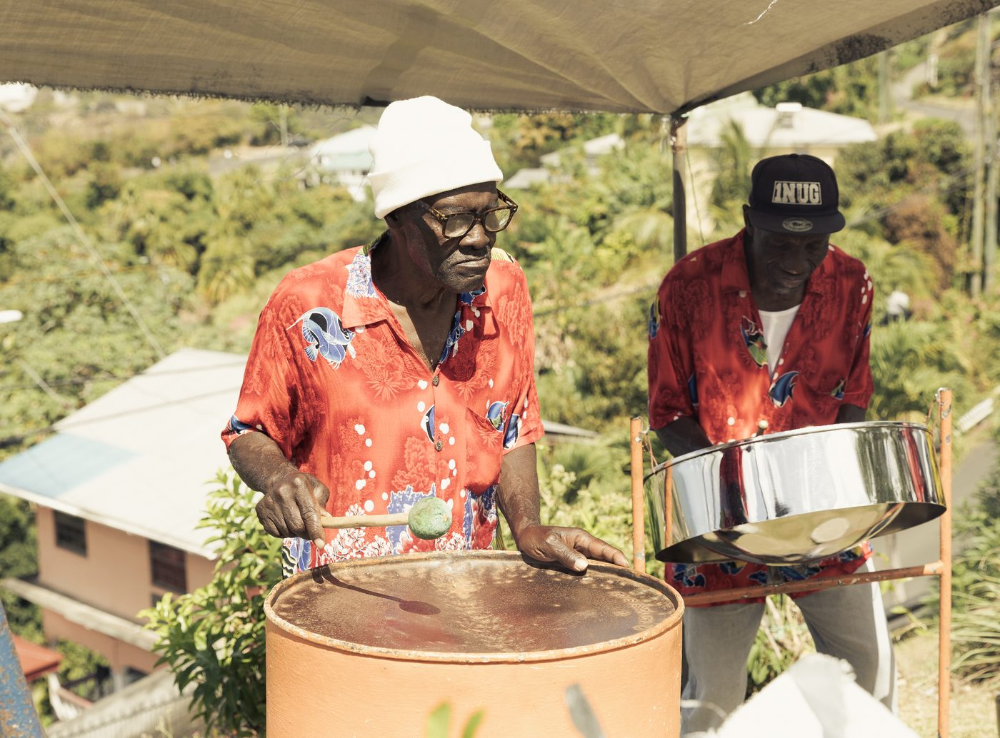

The rain plan, used in earnest
Carnival road · Notting Hill · August bank holiday
The brief
Harbourlight's two days on the Notting Hill route: 34 players, the full register from six bass to front-rank tenors, roughly five hours of playing a day on moving racks. The band books this a year ahead and the register entry is written the same week every year. The only variable is the sky.
The decisions
The forecast turned on the Saturday night, and the rain plan — written down in February, not improvised — came out. Canopies went over every rack, because a pan played in rain fills its note bowls with water and the pitch dies mid-tune. The playing order was re-cut: the long exposed stretch was played first, while the steel was dry, and the covered judging-point set moved to the wettest hour. The basses went under the truck's awning at every stop — six bass drums are the slowest to dry and the worst to re-tune. At the lunch stop I tipped water out of eleven pans and our tuner touched up two tenor notes that had gone sharp in the cold.
The outcome
The band completed the full route on both days, played every scheduled set, and lost no instrument to water damage. Two notes needed the tuner; the year we played without a rain plan, it was nine. The plan is now the register's standard August entry, copied forward every season.
“Marlon keeps the register the way other bands keep a trophy cabinet — except his gets used. When the rain came, nobody argued and nobody improvised. The plan was already written, and we finished the route.”